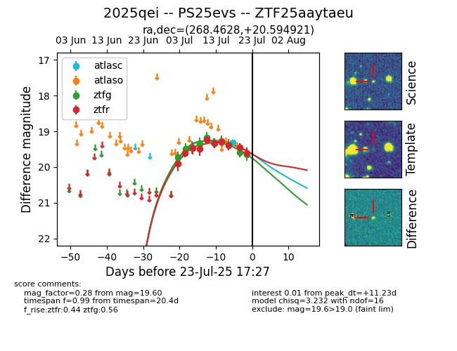

Target ZTF25aaytaeu at 2025-07-23 17:27, see:
FINK: fink-portal.org/ZTF25aaytaeu
Lasair: lasair-ztf.lsst.ac.uk/objects/ZTF25aaytaeu
ALeRCE: alerce.online/object/ZTF25aaytaeu
TNS: wis-tns.org/object/2025qei
YSE: ziggy.ucolick.org/yse/transient_detail/2025qei
alt names
ZTF25aaytaeu (ztf,fink)
2025qei (tns,yse)
PS25evs (panstarrs)
coordinates:
equatorial (ra, dec) = (268.4628,+20.59492)
galactic (l, b) = (45.7882,+21.56373)
photometry
last atlasc=19.31, ztfg=19.65, ztfr=19.60
1 atlasc, 10 ztfg, 10 ztfr detections
